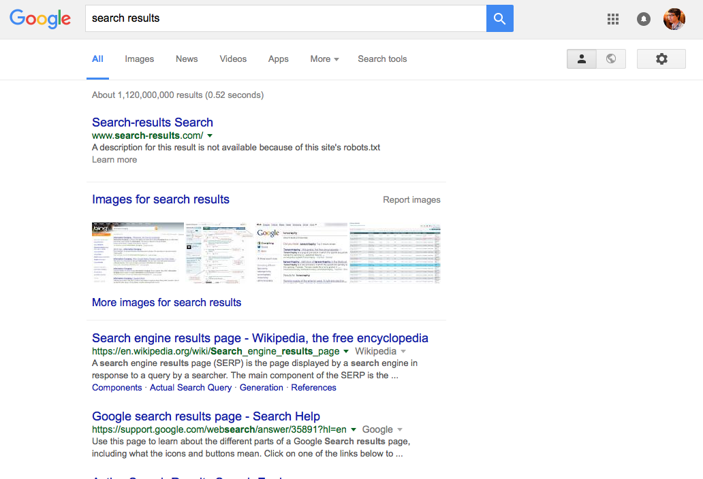
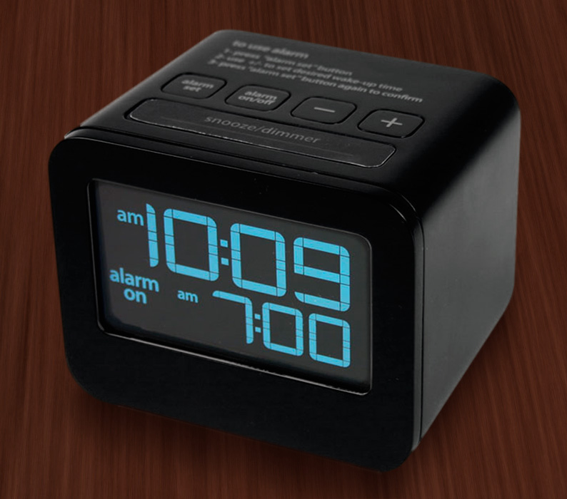
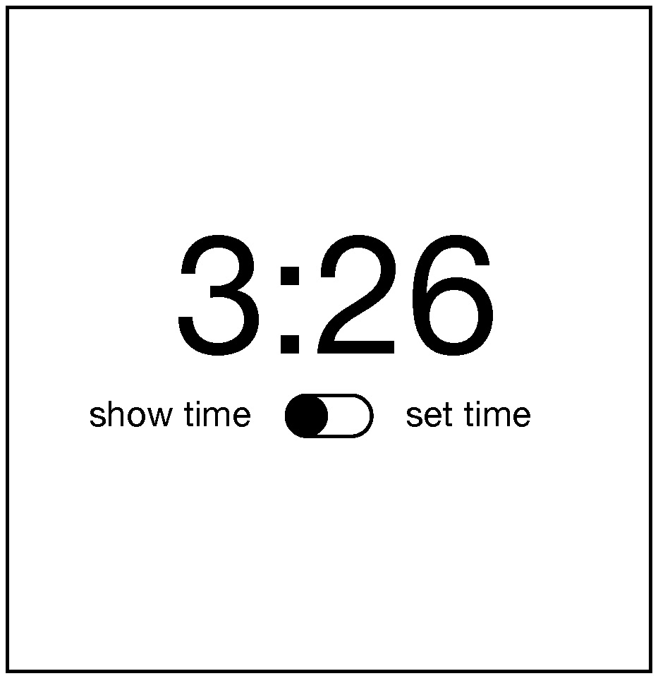
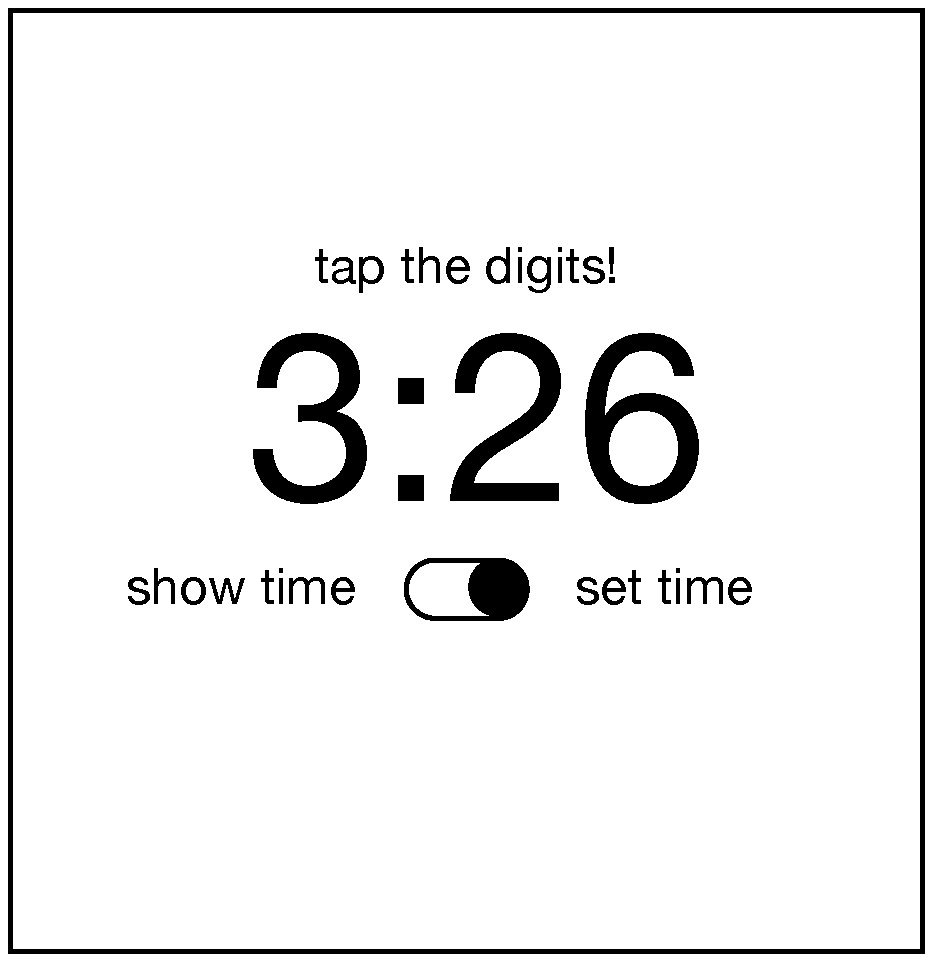
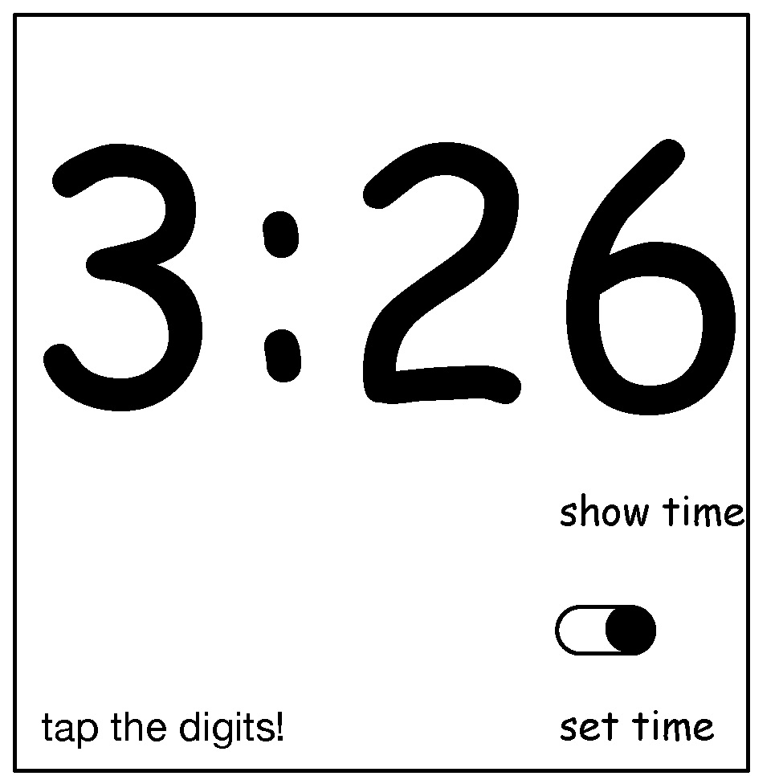

For most of these readings, we've been talking about design in manner agnostic to the medium in which you're designing. You might use the methods and ideas we've talked about to design anything from toothbrushes to tablets. But media vary. Smartphones are different things than desktop computers. Tablets are different from augmented reality. Each of these media have their own challenges, their own constraints, and their own conventions. And so there's knowledge about each medium that a designer needs to know.
In this class, we'll focus on screen-based user interface design for digital computers, since that's currently the dominant medium in society (this includes desktops, laptops, tablets, smartphones and even smart watches, but not augmented reality, virtual reality, or other non-screen interactions). Let's discuss some of the core concepts in screen-based human-computer interaction and some of the paradigms that exist in this medium.
First, let's start with some basics you probably already know. Computers are functional machines, and so their behavior is governed by the concepts of input, output, and algorithms. Computers take input, process it with some algorithm, and then provide output. Everything about a human interface for a computer is therefore about these three things.
Let's define each of them. Input is any kind of data that a user provides to a computer. Most often, these are keystrokes, mouse positions, mouse clicks, taps, and other sequences of low-level inputs. These lower-level inputs are usually aggregated into higher level inputs, such as clicks, taps, text strings, and gestures, which user interfaces then process. Every user interface accepts some range of input, and those inputs each have some structure. Part of a user interface is providing means by which users can express those inputs in valid structures.
What's the range of input that Google accepts on its search page? It has a text box, which accepts unicode text strings. It response to all kinds of keystrokes and accepts all kinds of symbols from all kinds of languages. The button on the right also accepts a mouse click. The low-level structure of the text input is a sequence of characters. Google takes that low level structure and parses in into a higher level structure of keywords, which it then uses as input to its search engage.
The Google search page actually accepts many other implicit inputs too. There are a variety of personalization settings, such as search history, search preferences, and even sensor input (such as your location) that it also accepts as input. The user interface doesn't provide explicit controls for providing this input, but it is user input nonetheless.
Some of these implicit inputs also have default values. For example, when you first used Google, your search history was empty, your language preference was chosen based on your IP address, and so on. Defaults represent a designers' beliefs of a user's most likely expectations, intents, and tasks.
The Google search results are the search engine's output. Like input, output can come in many forms and also has structure. The search results above include a stacked list of results, including a top result, several image search results, and a list of results. Each result has particular metadata that was computed and displayed.
Inside the implementation of a user interface are several kinds of data and algorithms that determine it's behavior. One of the most central kinds of data is state. State is data stored in memory that represents information about an application it's current status. Think of it like a variable in a program that gets reflected somehow in the user interface's appearance or behavior. For example, consider an alarm clock. It's state includes things like the current time, an alarm time and a Boolean alarm on state. These states could be displayed to a user and modified by a user in a variety of ways. (Think of all of the alarm clock designs you've encountered in your life: they all have basically the same state with entirely different interfaces). All user interfaces respond to input by executing event handlers, which take the input and perform some operation on state, then provide some feedback to explain the result of the operation. Pressing a snooze button on an alarm, for example, sends input to an event handler, which responds to the input by disabling the alarm sound (setting the alarm on state to false) for a fixed period of time.

A mode is a state that causes a user interface, given the same input, to provide different output depending on the value of the state. For example, some alarm clocks have a switch that allows you to move between two "show time" and "change time" modes. This is captured in a two-valued "time mode" state, which is either "show time" or "change time." When the mode is ""show time" mode, the hour and minute buttons may do nothing, but when the mode is "change time," the buttons might increment the hour and minute. Because in our example a switch controls this mode, this is an example of a passive mode, which requires user input to set and unset (the user has to remember to pull the switch back to "show time" mode). There are also active modes. For example, imagine that instead of a switch to change modes, there was a button that had to be held down to change the time. People don't have to remember to exit this mode because by virtue of the physical action they performed to to enter the mode (pressing the key), the opposite physical action will exit the mode (releasing the key).
Phew, that was a lot of terminology!
Let's tie all of this terminology to design. The primary goal of a user interface designer is to define inputs, outputs, and event handlers to modify state. That means that before you ever make a user interface for something, you have to first decide what input, output, and state exist in your design, independent of how those are manifested in a user interface. This is a fundamentally larger question about the information and behavior that your application will have. You should really design these before you ever worry about the user interface for a design, as your user interface is completely dependent on your decisions about what an application stores and can do.
Let's design a clock user interface for a smartphone. Let's start with a super simple clock that just displays the time. It has a "current time" state, a "setting time" mode. It accepts three types of inputs: a request to switch between showing the time and setting the time, and requests to increment the hour and minute. Because it accepts three inputs, it also has three event handlers to modify the "setting time" mode, and increment the hours and minutes. Note that we haven't yet said what any of this looks like or how it's laid out on the screen.
If we adopt the aesthetic of designs being invisible, a good design would make the inputs, state, and outputs discoverable, clear, and efficient to use. That means we have to answer one big design question: how can we make it clear that to set the time, they need to 1) switch to time setting mode, 2) repeatedly increment the hours and minutes until reaching the current time, and 3) switch back to time display mode?
To help us think about this we can use the concepts of gulfs of execution and evaluation. The gulf of execution is the gap between what a person wants to do with an interface and what inputs are actually possible to provide. It's the struggle every person has to translate their goal into input that further their goal. For example, if you were using an alarm clock, one of the gulfs to bridge is how to make the alarm active; an interface with a big switch that says "on" and "off" has a small gulf for the user to bridge; they'll probably figure out what those buttons mean. An interface that has a similar switch hidden away in a menu that's not discoverable poses a much larger gulf of execution.
The gulf of evaluation is the gap between the output and feedback an interface provides and a person's ability to relate that output to their goal. In our alarm example, if pressing the visible on/off to "on" made the switch visibly move to an "on" state (and perhaps even make a satisfying click sound), that's the interface bridging the gulf of evaluation, providing feedback to the user to help them understand the effect of pressing the switch. In the other interface where the switch was hidden, imagine a user pressing on the time, trying to see if that would activate the alarm, but the interface providing no feedback. That's a very large gulf of evaluation, requiring the user to guess what the lack of a response means.
When you're designing a user interface, you're looking for a design that makes these gulfs as easy to bridge as possible. In most screen-based user interface design, bridging these gulfs requires a few strategies.
The first strategy for bridging gulfs of execution is to make clear affordances. This means providing perceptual cues that tell a person that action is possible. For example, the little blinking vertical line in the text box (the text "caret") is affordance that says to the user "you can type stuff here". Lots of designs fail to provide affordances, but we learn them eventually anyway. For example, touch screens have hidden affordances, because there's very little about a perfectly flat glass surface that says "you can touch me to do things with data". Other devices have false affordances, such as websites that have text colored with the same color as links. These are perceptual cues that suggest the potential for action where there is none.
To apply this strategy to our clock design, that means we want to provide some affordance for seeing that there's a time setting mode. Let's try this:
Does it work? It depends on whether the users would be familiar with this iOS convention of a switch looking like a little movable circle in a track. Conventions are design patterns (combinations of design decisions) that people have already learned. By using them, you don't have to teach something new to a person. That's why Apple requires all interfaces in its App Stores to use the same graphical user interface controls, the same typography, the same keyboard shortcuts, and similar layouts: this way, users can learn something once and reuse that knowledge everywhere.
To account for users that might not know this convention, we could add some labels to help someone learn the convention:

Will users unfamiliar with the convention know that they can tap that switch toggle it? Maybe. It's worth usability testing. They'll probably try to tap the labels and nothing will happen and they'll get confused.
To bridge the gulf of evaluation, you must provide feedback that is immediate and explains to the person viewing it what the computer did with their input. This is a teaching moment. Once someone enters are time setting mode, how will we teach them what to do next? We need to give them some feedback:

That's pretty direct and not very elegant, but I bet it's clear.
How will we help them remember to switch back into show time mode? Ah, now we've come to a tricky design problem. We could keep adding more text to remind them to do it, but that gets pretty cluttered. We could also reconsider having a time setting mode altogether and instead just have users tap the hours and minutes whenever they want to change them. But that might be error prone, with people accidentally changing the time. The mode helps prevent those mistakes. Perhaps it could switch back automatically after some time? Or switch back when the user switches to another app? These are the joys of UI design: trying to find a way to balance simplicity, clarity, and convention.
Now, there is a central aspect of UI that he have not discussed yet, and yet is likely one of the most important aspects of designing clear user interfaces: typography. Why did I choose to center the time above? And the controls? Why did I choose the font that I did? Let's see what happens if I change these choices in the worst possible way.

What makes this new design so much worse? Well, first, the left-to-right layout of the labels and the switch actually contained crucial information: when the switch is on the left, it's show time mode, and when it's on the right, it's set time mode. The new design is highly ambiguous. It's not even clear if the labels have anything to do with the switch because of the whitespace between the labels and the switch. And the prompt to set the time appears so far from the digits themselves, the word "tap" is no longer clear, because the proximity of the label clarified that "tap" meant "tap the digits just below this text". As you can see, where you place words, the fonts you use, the space between them, and the alignment between them all contain crucial information for understanding the meaning of text (and can easily convey misinformation). If you ignore typography, you both ignore essential opportunities to bridge the gulf of execution and evaluation, but you risk widening those gulfs considerably.
We will not go in depth into typography in this class, or into much more depth about user interface design. These basics, however, are the foundation you need to begin practicing.
Edwin L. Hutchins, James D. Hollan, and Donald A. Norman (1985). Direct Manipulation Interfaces. Human-Computer Interaction, 1(4).
Rex Hartson (2003). Cognitive, physical, sensory, and functional affordances in interaction design. Behaviour & Information Technology, 22(5).
Myers, B., Hudson, S. E., & Pausch, R. (2000). Past, present, and future of user interface software tools. ACM Transactions on Computer-Human Interaction (TOCHI), 7(1), 3-28.